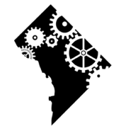

DC 2015 - Welcome
Sponsors
Ready for more DevOpsDays?
DevOpsDays DC will return June 8-9, 2016.
DevOpsDays DC 2015

A house divided against itself cannot stand.
Change is in session! DevOpsDays DC was held June 11 and 12, 2015 at the US Patent and Trademark Office in Alexandria, Virginia. Read more about DevOpsDays DC in our latest press release.
The Ayes Have It - DevOpsDays DC is a wrap!
The inaugural DevOpsDays DC is in the books, and was a resounding success. THANK YOU to everyone who helped made it happen - our partners at the USPTO, all of our sponsors, our talented and engaging speakers, dedicated volunteers and organizers, and most importantly our 400+ attendees from the private and public sectors and everywhere in between.
If you missed the event, or if you made it to the event but missed anything there, here are some links to help you get briefed:
- The schedule
- The program, including:
- Some of what happened in Open Spaces: Areas 1-4 and Areas 5-8
- Video of the keynotes and ignites.
- Session notes, job postings, and banter
- Some Twitter searches:
{kind=link}
{kind=link}
A special thanks to everyone who attended for helping us provide a harassment-free conference experience for everyone. Our code of conduct was understood and respected, and we greatly appreciate it! If you do have any comments or complaints after the fact, please let the organizers know (see the bottom of the conduct page.)
Ready for more DevOpsDays? DevOpsDays DC will return June 8-9, 2016. In the meantime, if you're looking for more DevOpsDays, there are several upcoming events in both CONUS and OCONUS - road trip!
Why Attend?
Whether you're in government, academia, or the private sector, DevOpsDays is for you.
Whether you're in operations, development, QA, security, or any other department, DevOpsDays is for you.
Whether you want to learn about DevOps, share your experiences, or just talk shop with DevOps practitioners, DevOpsDays is for you.
DevOpsDays are a mix of keynote sessions and open spaces. Final speaker selection is underway. The keynotes and open spaces will include discussions on topics such as:
About Washington, DC
If all you know of Washington, DC is what you see on C-SPAN or House of Cards, you're missing out. While its importance as the Nation's Capital and center of government is undisputed, the "DMV" (District, Maryland, and Virginia) is also home to innovative startups, leading universities, and world-class arts and culture.
If you're local, you already know the diversity of our DevOps community. If you're coming in from elsewhere, prepare to mix with DevOps leaders from every segment of our vibrant local scene. And, of course, take some time to check out everything else the Nation's Capital has to offer, from the many free Smithsonian museums to great food and drink!
For those coming from out of town, there are flights from just about everywhere to our three local airports, and there are several hotels nearby. More details are on the location page.
Platinum & Venue Sponsor

Platinum Sponsors


Gold Sponsors


Silver Sponsors